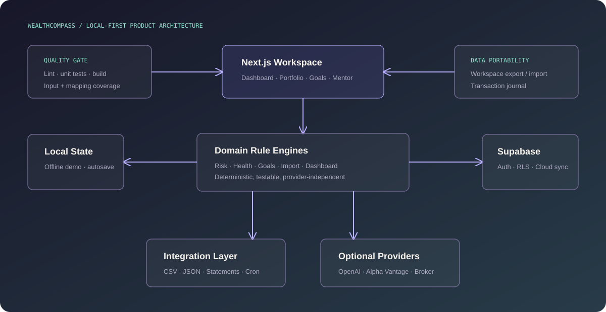

Next.js + TypeScript
Componentized dashboard workflows and route handlers.
A free-first investment companion making risk, portfolios, financial goals and market context understandable for beginner investors.
Most investment tools assume financial fluency. Beginners need explanations, planning support and portfolio feedback without immediately requiring paid data or broker integrations.
WealthCompass combines onboarding, risk profiling, education, portfolio tracking, multi-goal planning, market context and mentor guidance in a local-first workspace.
Profile → Risk score → Learning → Portfolio → Health rules → Goals → Market context → Mentor → Cloud sync

Componentized dashboard workflows and route handlers.
Useful without credentials, with authenticated cloud sync when configured.
Deterministic risk, health and goal engines provide reliable fallbacks.
Extracted modules cover scoring, imports, mappings and planning.
Local storage and fallback market data keep the product demonstrable without external accounts.
CSV and JSON import/export, statement review and transaction history reduce lock-in.
Normalized inputs, mapping tests and sync states make external failures visible and recoverable.